Tutorials¶ Introductory¶ Qiskit warmup An introduction to Qiskit and the primary user workflow. Quantum circuits¶ বর্তনীর (সার্কিট) প্রাথমিক ধারণা Qiskit দিয়ে শুরু করা যাক। 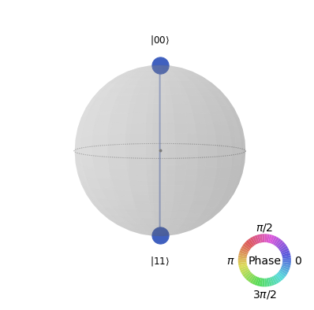 Qiskit এ দৃশ্যায়ন (ভিজুয়ালাইজেশন) কোয়ান্টাম প্রক্রিয়ার সারমর্ম বর্তনী (সার্কিট) সংক্রান্ত টিউটোরিয়ালসমূহ Advanced circuits¶ উন্নত সার্কিটসমূহ 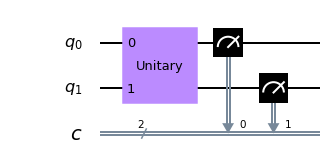 অপারেটরসমূহ 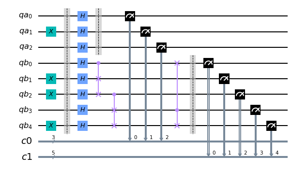 কোয়ান্টাম বর্তনী দৃষ্টিগোচর করা ট্রান্সপাইলারের ছাড়পত্র ও ছাড়পত্র পরিচালক পাউলি যুক্তিবর্তনী (গেইট) পালস সময়সূচী তৈরির পদ্ধতি শিডিউলারের ব্যবহার Obtaining information about your backend 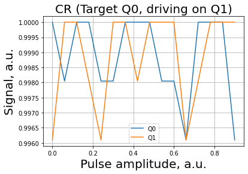 Qiskit Aer: Pulse simulation of two qubits using a Duffing oscillator model Qiskit এয়ারঃ তড়িৎস্পন্দন বা পালস সিমুলেশনের ব্যাকেন্ড মডেল উন্নতর বর্তনী (সার্কিট) টিউটোরিয়াল Classical simulators¶ Simulators যন্ত্রের ব্যাকেণ্ডের নয়েজ মডেল সিমুলেশন ত্রুটি নকশা নির্মাণ Applying noise to custom unitary gates ত্রুটি রূপান্তর সম্প্রসারিত সুস্থিতিকারী সিমুলেটর ম্যাট্রিক্স গুণফলের অবস্থা সিমুলেশন পদ্ধতি উচ্চ-কর্মদক্ষতাসম্পন্ন সিমুলেটরের পাঠসমূহ (টিউটোরিয়াল) Quantum system error analysis¶ 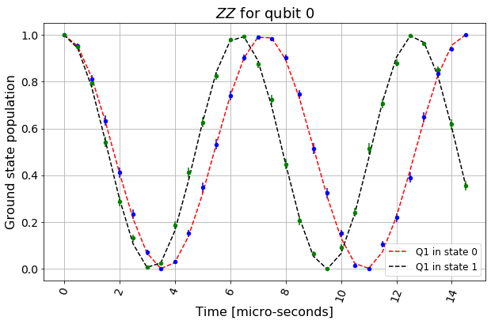 হ্যামিলটোনিয়ান এবং সার্কিটের শ্রেণিবিভাগ 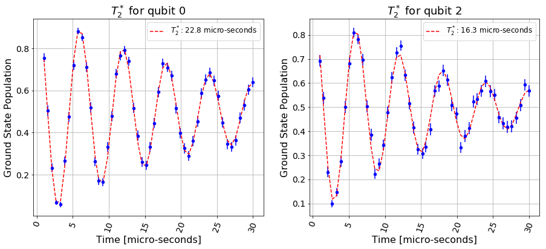 শিথিলকরণ এবং অসমদশা (ডিকোহেরেন্স) জাত ফলাফল ত্রুটি প্রশমিতকরণ 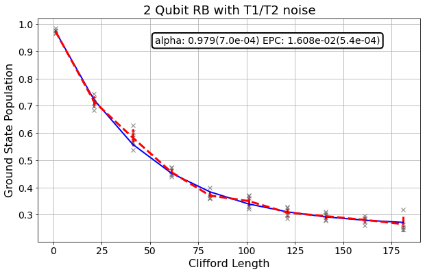 এলোমেলোভাবে মাপকাঠি (বেঞ্চমার্কিং) বের করা 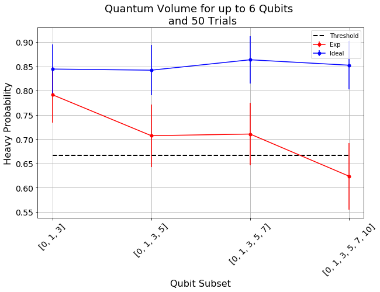 কোয়ান্টাম আয়তন (কোয়ান্টাম ভলিউম) পুনরাবৃত্তি বা রিপিটেশন কোড স্বীকৃতিকরণ নিয়মাবলী (অ্যাক্রেডিটেশন প্রোটোকল) কোয়ান্টাম টমোগ্রাফি এনট্যাঙ্গেলমেন্ট এর প্রতিপাদন কোয়ান্টাম ব্যবস্থার ত্রুটি বিশ্লেষণের পাঠসমূহ (টিউটোরিয়ালস) Algorithms¶ Qiskit-এ ধারাক্রমগুলোর (অ্যালগরিদম) ভূমিকা। 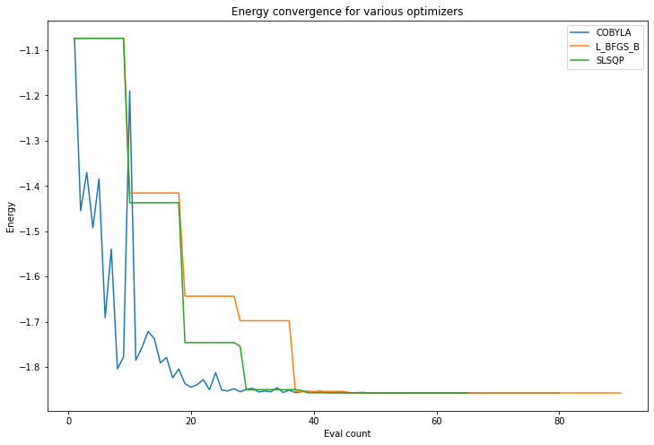 ভি কিউ ই এর এক-কেন্দ্রাভিমুখতা (কনভারজেন্স) নিরীক্ষণকরণ এয়ার (Aer) সিমুলেটরে ত্রুটি-যুক্ত ভি.কিউ.ই উন্নত ভি কিউ ই ব্যবহার 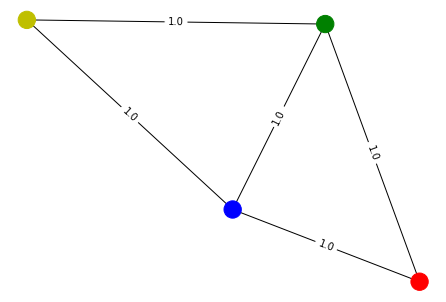 কোয়ান্টাম অ্যাপ্রক্সিমেইট অপ্টিমাইজেশন অ্যালগরিদম 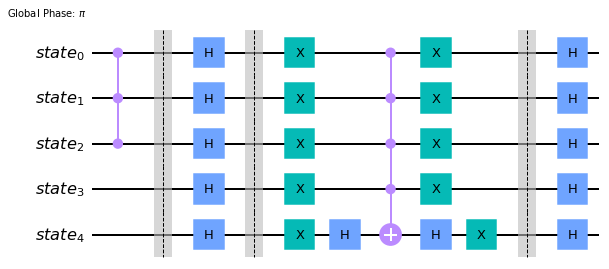 গ্রোভার অ্যালগরিদম এবং বিস্তার বিবর্ধন 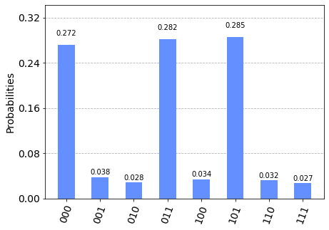 Grover এর অ্যালগোরিথমের উদাহরণসমূহ Shor এর অ্যালোগরিদম ধাপে ধাপে কোয়ান্টাম দশা অনুমানকারী ধারাক্রম (অ্যালোগরিদম) অ্যালগোরিথমের পাঠসমূহ (টিউটোরিয়াল) Operators¶ Operator Flow Qiskit নতিমাত্রা কাঠামো ( ফ্রেমওয়ার্ক ) কার্যকারক (অপারেটর) পাঠসমূহ (টিউটোরিয়াল) Sample algorithms in Qiskit¶ ধাপে ধাপে কোয়ান্টাম দশা অনুমানকারী অ্যালগরিদম Qiskit-এ পাঠ্যপুস্তক ধারাক্রম (অ্যালগরিদম)